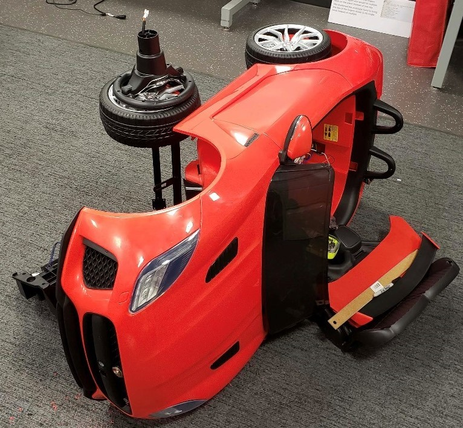

Projects
Self Driving Car


Spent 30 Hours on the project
- Designed Circuits and Assembled the Electronics
- Programmed the Arduino in Embedded C
- Setup Raspberry Pi for Deep Learning and Computer Vision
Calendaring App
Spent 40 Hours on the project
- Used Github to develop the Java code while working with a Team
- Presented to the Eastern Idaho Innovator’s Challenge
- See Github for code
Biology Exam Data Analysis
Spent 20 Hours on the project
- Used R and the Tidyverse package to wrangle and visualize data
- Allowed Professors to help Improve Curriculum
- See Exam Data Webpage
Current-limited (BJT and OP-AMP) DC Power Supply

Spent 20 Hours on the project
- Calculated the value of components of the power supply
- Designed a power supply that convert 20V AC/DC to 5V DC
- Soldered the Circuit together
FPGA (Verilog) Multifunction Calculator
Spent 30 Hours on the project
- Created new AVR commands
- Used Basys 3 (Artix 7) FPGA Board
- See Multifunction Calculator Webpage
Electric Skateboard

Spent 40 Hours on the project
- Selected and assembled the components
- Programmed the VESC in Embedded C
- Setup a Wii remote as the skateboard controller
Optimizing Calendar C++ Program
Spent 15 Hours on the project
- Hyperthreaded and Pipelined a C++ Calendar
- Used Tomohiko Sakamoto’s Algorithm
- To adjust for leap year
- To find the day of the week
- Used Tomohiko Sakamoto’s Algorithm
- Spead up the program by about 25 times
- About a 150 ms run time
ePortfolio
Spent 10 Hours on the project - On going
- This is one place to show:
- About Me
- Skills
- Program of Study
- Projects
- Resume
- Hosted on github
- Used Rmd and YML files to create
PolarFire Design Project
This project is on going
- Sponsored by NASA
- Done in VHDL and Embedded C
- Implement RISC-V core on the PolarFire dev kit
COVID-19 Analytics
This project is on going
- Done in R
- Website created with Rmd and Yaml
Lineage Logistics
This project is on going
- Done in Python